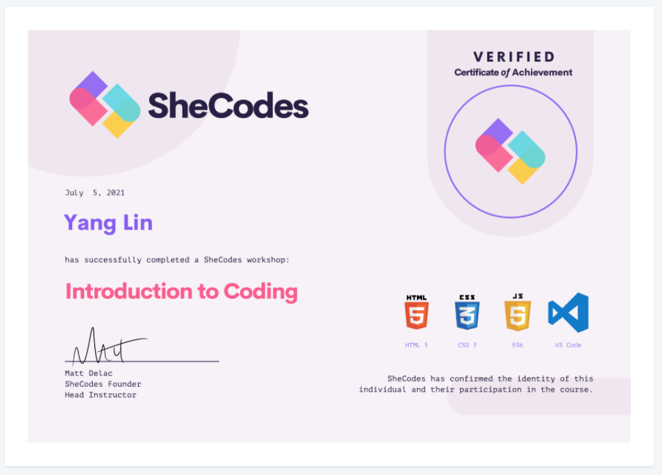

Jenny (Yang) Lin
Front-end Developer to be
I'm a 30-year old translator who is currently training to be a front-end web developer.
So far in my journey I have completed the
She Codes Basics , as well as a few Udemy tutorial
courses like the 50 projects in 50 days,
React-The Complete-Guide , and freeCodeCamp courses
such as Responsive Web Design,
JavaScript Algorithms and Data Structure,
Front End Development Libraries, which gives me a
wholesome and solid understanding of front end web development.
Feel free to visit my Github account
yangcodes
check out my projects.
Featured Projects
View selected projects below. Over 100 projects can be found at github.com/yangcodes.
Finished Projects from Shecodes Basics
My very first project on my coding journey, it's a landing page about yoghurt with JavaScript functions, including let, if, else, alert, prompt, event.
View Source CodeInsect Catch Game
I created this game watching the 50 projects 50 days tutorials on Udemy, it's a fun little bug catching game using JavaScript such as DOM elements, methods and events. Come have a play, bugs are not that disgusting :)
View Scource Code
Expense Tracker
This is an expense tracker built with React components that I built learning from the Udemy course React-the complete guide. It's a practical projects using React State, stateful lists and outputting conditional content.
View Source CodeEducation and Certificates
Guangdong University of Foreign Studies
Translation&Interpreting Master’s degree, September 2013--June 2015
Tianjin Foreign Studies University
Accounting & English Education double Bachelor degree, September 2009--June 2013
Certificates
-
JavaScript Algorithms and Data Structure

-
Front End Development Libraries

-
Responsive Web Design

-
SheCodes Basics

Work Experience
See my complete work history on LinkedIn.
Job Description:
- English Skills: translate and proofread Chinese online novels to English.
- Teamwork: onboarding and mentoring junior translators and communicating with team leaders regarding progress.
Job Description:
- Results- oriented: built and maintained a strong track record to ensure team KPIs are achieved.
- Leadership: supported management of training of new team members, writing reports assessing team members performance fortnightly.
- Customer service: develop rapport with potential supporters in the retail environment, engaged in compelling conversations, enhanced customer satisfaction, and improved the organization’s public image.
Key Achievement :
- Certificate of Achievement Winner for inspiring 50+ supporters
Job Description:
- Awareness raising: build rapport with potential supporters/customers in the retail environment, promoting organization in a positive manner, raising people’s awareness on poverty and injustice.
- Customer service: engaging and pitching potential supporters on how our sponsorship programs and child rescue programs are making a difference in underdeveloped countries, convincing people to become our regular supporters.
Key Achievement :
- Certificate of Excellence Winner during Christmas Campaign 2017